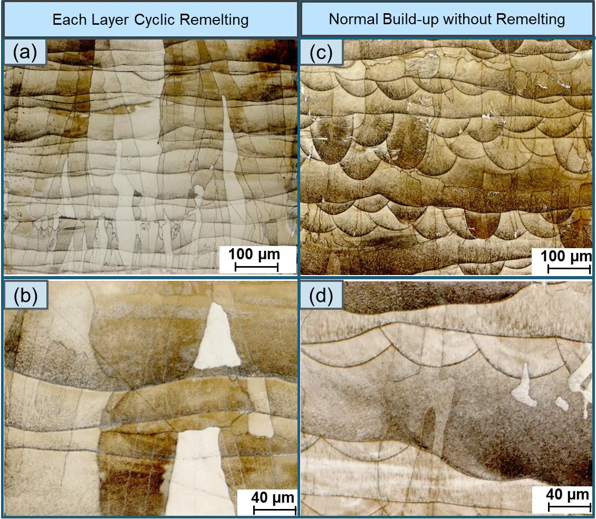
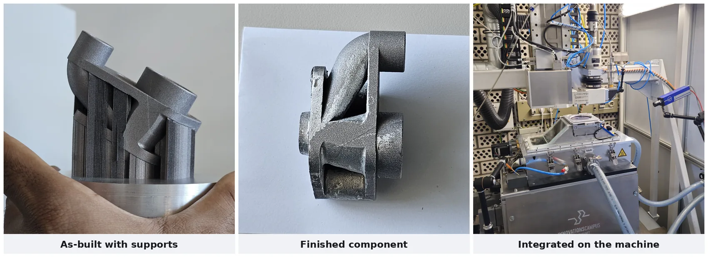
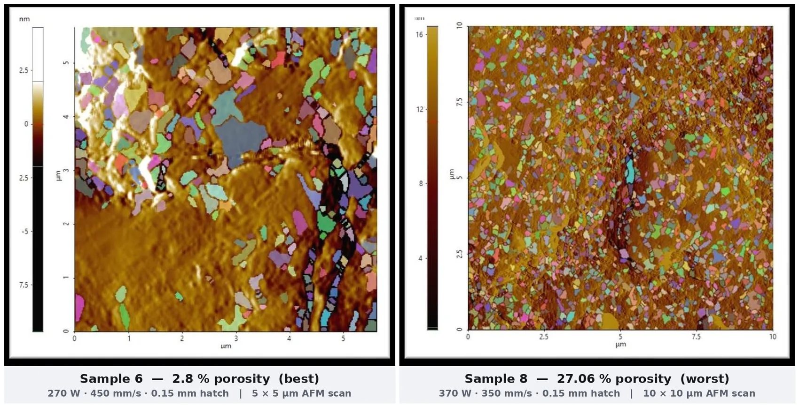

Metal additive manufacturing,
developed and proven.
I am a process engineer, at my most useful where a process has to be developed, qualified and proven rather than simply run. I work the whole chain: whether a design can be made, how it behaves before material is committed, the build itself, then metallography, surface measurement and the statistics that say whether a parameter set can be trusted.
- Open to relocation
- § 20 AufenthG · no sponsorship needed
- Available immediately

partly fused powder at the layer edge
38.3 % smoother, measured KEYENCE VR-3100
grain goes fully equiaxed
peer-reviewed in Procedia CIRP, 2024
About me
Metal additive manufacturing process engineer, at my most useful where a process must be developed, qualified and proven, not simply run.
Highly motivated, creative and self-directed across the whole process: judging whether a design can be made, simulating how it will behave before material is committed, preparing and running the build, then post-processing, metallography, surface measurement and the statistics that say whether a parameter set can be trusted. No stage handed away.
Structured and solution-oriented. Analytical and calm in front of a failure rather than discouraged by it, and careful to call a result true only once it has been reproduced.
Communicative across disciplines, and at ease explaining a decision to people outside the lab.
Curious, optimistic and still learning. The next step is carrying qualified processes into repeatable production.

What I deliver to an engineering team
Featured projects
Three projects, each taken from problem statement through method to quantified result.

In-process laser remelting for FeSi6.5 soft magnetic components
A heat-conduction remelting strategy that smooths the layer surface of a notoriously brittle alloy, for thin insulating layers in laminated soft magnets.
Sa 1.77 µm · published 2024 →

Inlet gas circulation system for a PBF-LB/M research machine
Designed, simulated, manufactured and integrated: active spatter evacuation, built in metal so it would tolerate the heated platform planned for the machine.
CAD · CFD · built · validated →

Porosity minimisation in laser-sintered cobalt-chromium for medical implants
Nine runs instead of twenty-seven. Mapped a tenfold porosity spread and identified which parameter actually governs it.
2.8% vs 27.06% · scan speed dominant →
Two more on the Projects page: a thermal characterisation study on printed aluminium for aerospace, and a camera mount I designed and built because the lab needed one.